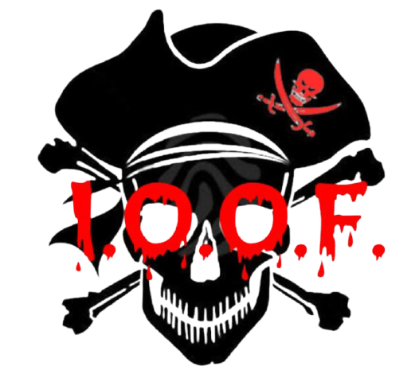

SELAMAT DATANG DI WEBSITE RESMI I.O.O.F

SEJARAH I.O.O.F
I.O.O.F adalah singkatan dari
INTERNATIONAL OM OM FEDERATION. I.O.O.F merupakan kumpulan siswa SMP yang mempunyai penampilan layaknya om om dan parahnya lagi beberapa dari mereka adalah pedo durjana yang sangat mengerikan.Istilah om om di berikan oleh siswa lain, yang melihat kelakuan dari salah satu member I.O.O.F dimana dia tertarik dengan seorang siswi yang masih SD karnakan body nya yang mlehoy dan tidak wajar bagi seorang siswi sekolah dasar.Diketahui pendiri dari I.O.O.F ber-inisial K dan E yang juga dikenal dengan sebutan
OM FUCEK dan
OM KUMIS dan kemudian di ikuti oleh beberapa siswa lainnya dengan cara memasuki grub WhatsApp yang dibuat oleh sang pendiri.
TUJUAN I.O.O.F
I.O.O.F
tidak memiliki tujuan yang spesifik, meskipun mereka berpenampilan layaknya om om akan tetapi mereka mempunyai hobi seperti kebanyakan siswa SMP pada umumnya.Mulai dari gamers mobile dan emulator,YouTubers,penikmat meme,wibu hingga kang bucin.
NASIB I.O.O.F
Dikarenakan Wabah corontol ini I.O.O.F, sekarang tidak lebih dari grub WhatsApp yang penghuninya telah memiliki kesibukan masing-masing meskipun itu hanya rebahan.
Sekian Web gaje ini dibuat dengan segala kegabutan